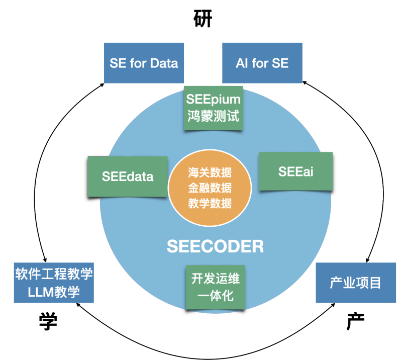
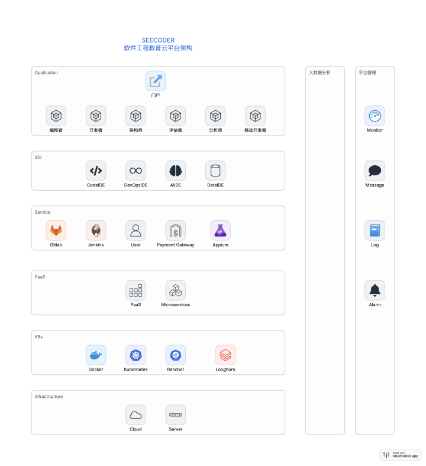
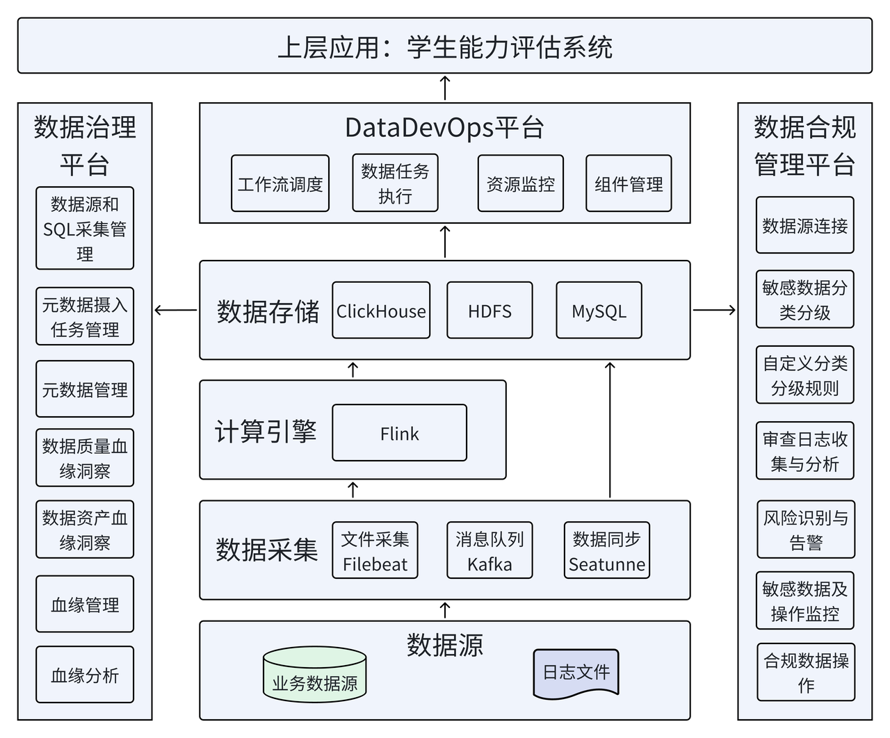
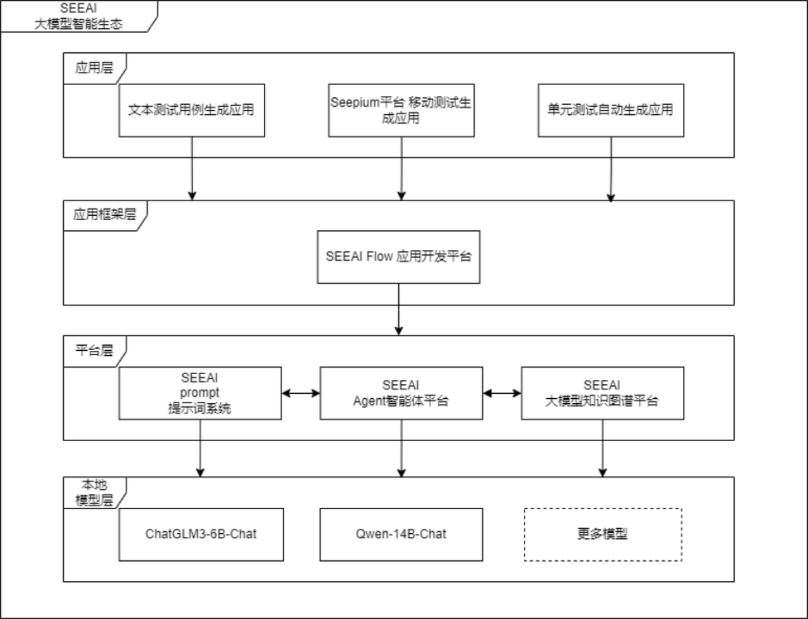
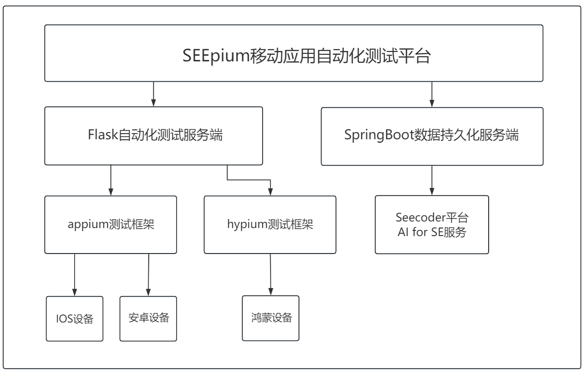

研究方向
SEECODER平台
SEECODER软件工程教育云平台是软件学院刘钦老师实验室自2018年开始自主研发的一款产教研融合平台。平台由开发运维一体化主平台SEECODER、大数据分析平台SEEdata、大语言模型平台SEEai、鸿蒙自动化测平台SEEpium组成。
SEECODER主平台
SEECODER平台提供了一整套DevOps机制，旨在为团队提供高效、协作的开发环境。平台为用户提供了一系列完整的工具和流程，涵盖了从需求管理到代码部署的整个软件开发生命周期。
编程者子平台
编程者Coder平台是专为学生设计的在线编程考试系统，隶属于SEECODER平台的应用系统之一。
开发者子平台
开发者Developer平台是面向学生的一站式研发管理平台，旨在支持学生进行完整的软件工程实践。
评估者子平台
评估者（Eval）平台是SEECODER平台的重要应用之一，旨在提供评测题系统。
SEEdata 大数据框架
SEEdata是SEECODER平台大数据平台。平台由DataDevOps平台、数据治理平台、数据合规管理平台和上层应用组成。
SEEai LLM框架
SEEAI是SEECODER平台LLM应用开发平台。平台由本地模型层、平台层、应用框架层和应用层四个层次组成。
SEEpium 鸿蒙测试框架
SEEpium鸿蒙测试框架基于鸿蒙Hypium测试框架、大语言模型进一步集成，提供比鸿蒙Hypium Test测试工具更进一步的鸿蒙OS自动化测试能力。
SE for Data
在SE for Data，我们专注于提升人工智能领域的数据集质量。我们的目标是通过创新的数据集评估和优化方法，确保研究人员和开发者能够获得最准确、最有效的数据集。
AI for SE
本模块研究如何利用大语言模型辅助软件工程，其中一个有代表性的项目是测试用例自动生成。该项目从软件需求文档出发，利用AI技术，研究自动生成文本测试用例的方法，服务于软件测试人员。